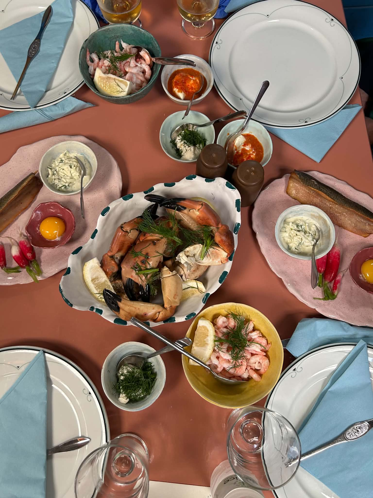

Udkast
Otte måder at vise menuen
De fem første bygger på det samme billede af hele bordet. De tre nederste, F, G og H, er helt uden fotos af maden, så teorien om at madbilleder ikke hjælper kan afprøves side om side. Sig hvilken vej der føles rigtig, hvad der skal skrues på, og hvad der kan smides væk. Siden er ikke linket fra hjemmesiden, og søgemaskiner er bedt om at lade den være.
Udkast A
Bordet som kortet
Små tal ligger på retterne, og nøglen ved siden af fortæller, hvad de er. Peger man på et tal, lyser den tilhørende linje op, og omvendt. Samme talsprog som 01 til 04 på nytårssiden.

Udkast B
Det trykte kort
Billedet som et bånd, og derunder menuen sat op, som var den trykt på karton. Retternes navne står i antikvaen frem for i den kondenserede versal, hvilket gør kortet blødere at skimme.
Fra havet udenfor
Thorupstrand, hundrede meter herfra
Til bordet
Krabbekløer
Kogte krabbekløer, en dressing og en kniv, der er skarpere end den ser ud. Resten knækker du selv.
Håndpillede rejer
En skål rejer og en kvist dild. Til dem, der hellere vil spise end knække, og til dem, der vil have begge dele.
Røget sild
Med rå æggeblomme, dressing og radiser. Vores mormors ret, næsten som hun lavede den.
Til sidst
Til at drikke
Alt serveres med brød og dressing
Udkast C
Stregerne
Navnene står ude i papiret, og en hårfin rød streg går ind og rører retten. Det er den roligste af de interaktive: der er intet at trykke på, alt kan læses på én gang, og det ligner en gammel plancheside fra en kogebog. På en telefon er der ikke plads i siderne, så stregerne viger for en almindelig liste.
Udkast D
Læn dig frem
Tryk på en ret i menuen, og billedet kører hen til den og zoomer ind, som når man læner sig frem over bordet for at se, hvad der står i den anden ende. Tryk igen, eller på "hele bordet", og det trækker sig tilbage. Her sker der noget, hver gang man rører den, og det gør menuen til noget man leger med i stedet for læser.
Udkast E
Luppen
Overraskelsen. Før musen hen over bordet, så følger en lup med, forstørrer det, den ligger over, og siger hvad det er. På telefon trækker man den med fingeren. Det er den eneste af de fem, hvor gæsten selv opdager retterne i stedet for at få dem serveret, og det passer til et sted, hvor man også selv skal knække kløerne. Navnene står som almindelig liste nedenunder, så intet går tabt uden mus.
Før musen hen over bordet
Udkast F, uden mad på
Plakaten
Ingen billeder overhovedet. Kun retternes navne, sat så stort at de bliver til noget i sig selv. Teorien er, at et fotografi låser fantasien fast på præcis den portion, mens ordet "krabbekløer" i tre centimeters højde lader gæsten forestille sig sin egen. Den er samtidig den letteste side i hele testen: der er ingenting at hente.
Menukort
Krabbekløer
Kogte, med en dressing og en kniv, der er skarpere end den ser ud. Resten knækker du selv.
Håndpillede rejer
En skål rejer og en kvist dild. Til dem, der hellere vil spise end knække.
Røget sild
Med rå æggeblomme, dressing og radiser. Vores mormors ret, næsten som hun lavede den.
Til sidst
Valnøddetærte
Chokoladetærte
Til at drikke
Øl fra Hancock og Thy
Vin fra Sydafrika, New Zealand og Bourgogne
Kaffe, the og sodavand
Alt serveres med brød og dressing
Udkast G, uden mad på
Ordene
Her gør ordene arbejdet i stedet for billedet. Tryk på en ret, og det, den består af, træder frem ét ord ad gangen. Sidste ord er ikke en ingrediens, men det man sidder tilbage med, og det er hele pointen: et foto kan vise en klo, men ikke en eftermiddag. Virker med både mus og finger.
Udkast H, uden mad på
Hvad er du for en?
To spørgsmål, og så peger den på din ret. Den bruger sidens egen skelnen mellem dem, der vil slås med skallerne, og dem, der bare vil spise. I stedet for at vise gæsten al maden på én gang, spørger den, hvem gæsten er, og lader hende selv nå frem til svaret. Det er den eneste af de otte, hvor gæsten træffer et valg, inden hun ser en ret.